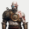

<section class="game__comments">
    <div class="game__comments--wrapper">
        <div class="game__comments--list">
            <div class="game__comments--title__sort">
                <h2>Commentaires</h2>
                <button class="game__comments--sorting">v Les plus récents - Tri</button>
            </div> 
            <div class="game__comments--list--comment">
                <div class="game__comments--author--infos">
                    
                    <div class="game__comments--author--details">
                        <p class="game__comments--list--comment--author">AxelPentaKill9</p>
                        <div class="game__comments--completion">
                            <span class="game__comments--list--comment--stars">4</span>
                            <app-rating [rating]="game?.rating"></app-rating>
                            <p class="game__comments--list--comment--completion">| Complété sur PC</p>
                        </div>
                    </div>
                </div>
                <p class="game__comments--list--comment--text">The narrative here is really, really good. Now that I've played 3, 4 and 5 I'm really surprised by just how strong the stories for these games are. I was a bit incredulous when I heard that the Persona series usually involves high school students but I've really come to appreciate the depth that Atlus brings to these characters and their stories...</p>
                <hr/>
            </div>
            <button class="game__comments--list--morebtn">Voir plus de commentaires</button>
        </div>
    </div>
</section>